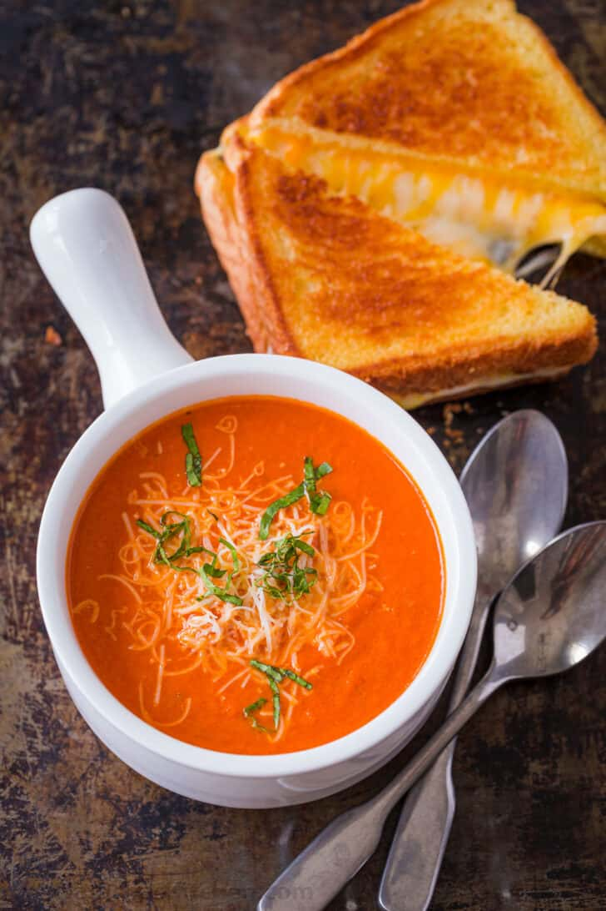

Tomato Soup

Description
This Creamy Tomato Soup is easy, comforting, and has a rich flavor profile. Watch the easy video tutorial and you’ll be craving a bowl of tomato soup paired with a gooey Grilled Cheese Sandwich.
Ingredients
- Butter – use unsalted butter to sautee onions
- Yellow onion – it seems like a ton of onion but it dissapears into the soup adding a balanced sweetness
- Garlic – you’ll need 1 Tbsp minced from about 3 cloves
- Crushed tomatoes – with their juice, preferably San Marzano tomatoes
- Chicken stock – for the best flavor use homemade chicken broth
- Basil – chop and add 1/4 cup fresh basil, plus more to serve. Basil leaves are easily bruised so chop by stacking a bunch of leaves then roll them into a log and cut into thin strips.
- Sugar – It’s just 1 Tbsp, but necessary to combat the tomato acidity.
- Black pepper – start with 1/2 tsp and add more to taste
- Whipping cream – adds a creaminess to the soup and offsets acidity.
- Parmesan cheese – adds saltiness to the soup and balances acidity. Adding parmesan adds enough salt and I usually don’t add more.
Directions
- Saute Aromatics – heat a non-reactive pot over medium heat. Melt in 4 Tbsp butter then sautee onions until softened and golden (10-12 min). Add minced garlic and saute another minute.
-
Make the tomato soup base – stir in two 28 oz cans of crushed tomatoes with their juice, your chicken stock, chopped basil, sugar and black pepper. Bring to a boil then reduce heat, partially cover and simmer 10 minutes.
- Blend if desired – use an immersion blender in the pot or blend in batches using a blender (be careful not to overfill the blender with hot liquid) and return soup to the pot.
- Add cream and parmesan – stir in the heavy cream and shredded parmesan. Return to a simmer and season to taste if needed.
- Serve – ladle into warm bowls and garnish with more parmesan and basil.
Home